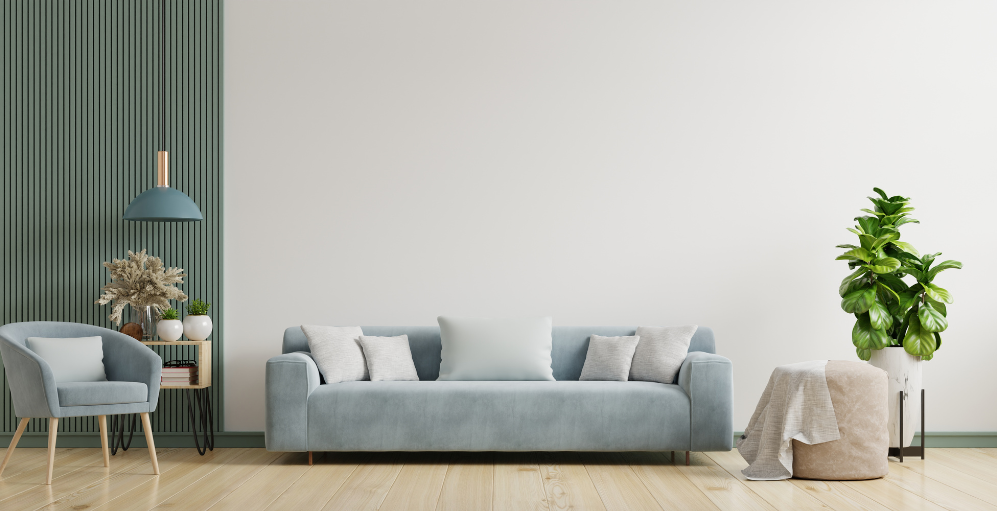

Find Your Style

Interior design encompasses a variety of styles, each with its own unique characteristics, aesthetics, and
influences. Here are some
popular interior design styles:
Modern:
- Emphasizes clean lines and simplicity.
- Uses a neutral color palette with pops of bold colors.
- Incorporates materials like metal, glass, and steel.
- Minimalist furniture and open spaces are key features.
Contemporary:
- Evolves with the current trends.
- Mixes various styles and design elements.
- Features neutral colors, open spaces, and clean lines.
- Showcases a balance of form and function.
Traditional:
- Draws inspiration from historical styles, often with a European influence.
- Rich, dark woods and detailed craftsmanship.
- Classic furniture and symmetrical arrangements.
- Uses a warm color palette.
Transitional:
- Strikes a balance between traditional and contemporary styles.
- Combines classic and modern furniture and decor.
- Neutral color palette with occasional bold accents.
- Focuses on comfort and practicality.
Industrial:
- Inspired by old factories and industrial spaces.
- Exposes raw materials like brick, steel, and concrete.
- Utilitarian furniture and functional decor.
- Neutral color palette with metal accents.
Scandinavian:
- Emphasizes simplicity, functionality, and comfort.
- Light colors, especially whites and soft grays.
- Natural materials like wood and textiles.
- Minimalistic furniture and clutter-free spaces.
Bohemian:
- Eclectic and free-spirited.
- Mixes patterns, textures, and vibrant colors.
- Embraces a relaxed and casual atmosphere.
- Incorporates global influences and handmade elements.
Mid-Century Modern:
- Originated in the mid-20th century.
- Clean lines, organic shapes, and functional design.
- Features iconic furniture pieces from the mid-1900s.
- Warm woods and bold accent colors.
Rustic:
- Inspired by nature and rural settings.
- Utilizes natural materials like wood and stone.
- Earthy color palette with warm tones.
- Cozy and inviting, often with farmhouse elements.
Art Deco:
- Originated in the 1920s and 1930s.
- Glamorous and luxurious.
- Geometric patterns, bold colors, and metallic accents.
- Symmetry and opulent materials like chrome and glass.
These are just a few examples, and many styles overlap or can be combined to create a unique and personalized
interior design. The key
is to choose a style that reflects your personality and preferences.